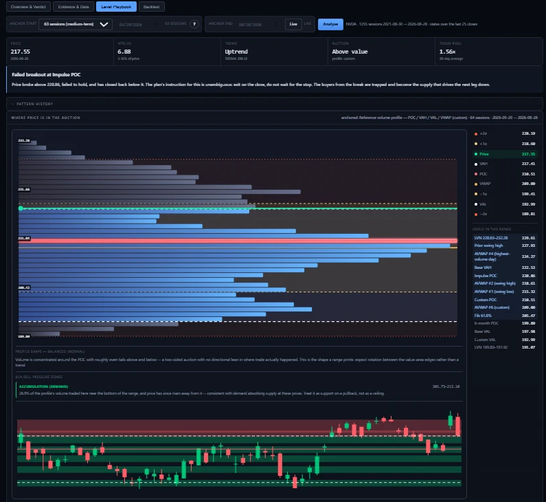

This is a demonstration website built to showcase web design and AI-assisted development. All data, figures, charts, tickers, and analysis shown are fictional and for illustration only — none of it reflects any real security, company, or market.
Nothing on this site is financial, investment, or trading advice, and no professional or fiduciary relationship is created by using it. This site and its content are provided "as is," without warranty of any kind. By clicking "I Agree," you confirm you have read and agree to these terms, and that you will not rely on any information on this site for research, analysis, or decisions of any kind.
This site uses your browser's local storage only to remember that you've dismissed this notice.
The interaction engine. Not "where are the levels," but "what do you do now that price is AT one."
Every swing trade starts at a level — a volume accumulation zone, a VWAP anchor, a swing pivot. The Playbook reconstructs the
A touch is not a signal; a close is. Every state is decided on daily closes, never on intraday wicks or speculation. TESTING always instructs waiting. A level state is binary only after a close outside the test zone. Materiality floors. A level under 0.15 ATR breaks constantly and is noise; thresholds scale with the bar length. State machine reads in order: rejection before acceptance — a retest of a level weeks ago belongs to that level, not to a later entry. The profile spreads a session's volume evenly across its high-low range. Identifies: Price is not close enough to any mapped level for a level-based decision. This is the state the desk should be in most of the time. "No level in play" isn't the only state. Here's an example of the day the auction ladder actually had something to say — a level rejected, and the plan's instruction is explicit about what to do next. Four load-bearing design rules (locked in by tests)
Volume Profile
Five-anchor AVWAP setup
Confluence stacked below (support)
When a level is in play — a real failed breakout
Level Playbook — price action analysis with volume zones
Price broke above the Impulse POC at 220.86, failed to hold, and closed back below it. The plan's instruction for this is unambiguous: exit on the close, do not wait for the stop — the buyers from the break were trapped and become the supply that drives the next leg down. The ladder on the right reads the profile shape as balanced (normal) — volume concentrated around the POC with even tails, a two-sided auction expecting rotation rather than trend — and flags a demand zone at 205.73–212.10 where 26% of the profile's volume traded and price has since risen away from it.
Price pulls back to an AVWAP, holds above it (no closes below), then reclaims it on volume. Highest-quality entry, lowest win rate — takes discipline to wait.
Price breaks above the daily value area on volume with no immediate rejection. More frequent, lower R per trade but high volume signals participation.
Price undercuts a level (VAL or swing low) on weak volume, then reclaims it. Classic institutional trapping of shorts. Rare, high conviction when it happens.
All information and data on this site exist only to build an example website. Ignore them and do not use them for any analysis.
Not an automated trader. Solaris Flow is a decision-support calculator only — every trade is entered and exited by hand in your broker. It synthesizes data, scores quality, and keeps a journal. It does not place orders, connect to a broker API, or touch real money.
Not financial advice. This is a personal research tool and hobby project — I am not a licensed financial advisor, broker-dealer, or professional trader. I am simply interested in using AI to build interesting applications and explore new ideas in software development. Every ticker, chart, screenshot, and figure shown throughout this site is an illustrative example for demonstration purposes only — none of it is real trading analysis or a recommendation on any specific security. This entire site and Solaris Flow application were built using Claude Code and AI.
This site and all its content are provided "as is," without warranty of any kind, express or implied, including as to accuracy, completeness, or fitness for a particular purpose. No fiduciary, advisory, or professional relationship is created by your use of this site. You are solely responsible for your own research, judgment, and any trading or investment decisions you make. By accessing or using this site or its information in any way, you assume all associated risk and agree to release, indemnify, and hold harmless the creator from any and all liability, claims, losses, or damages of any kind arising from or connected to that use.